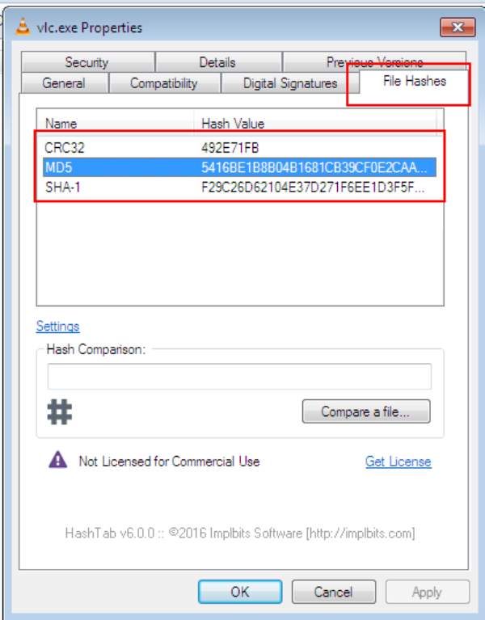
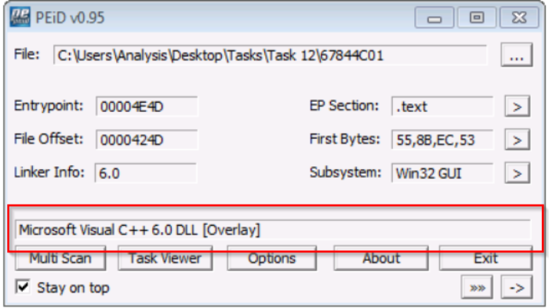
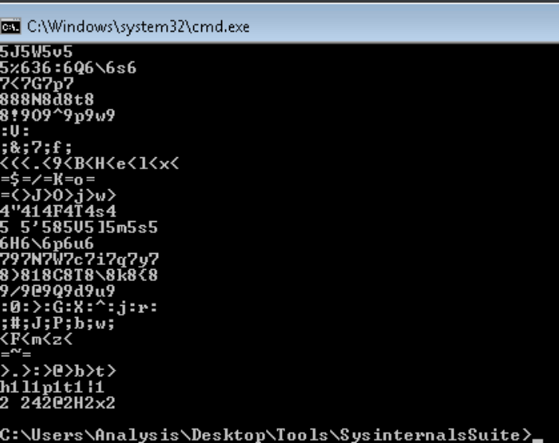
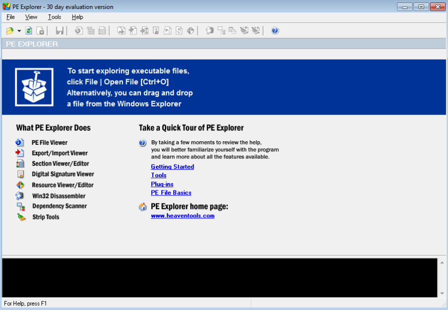
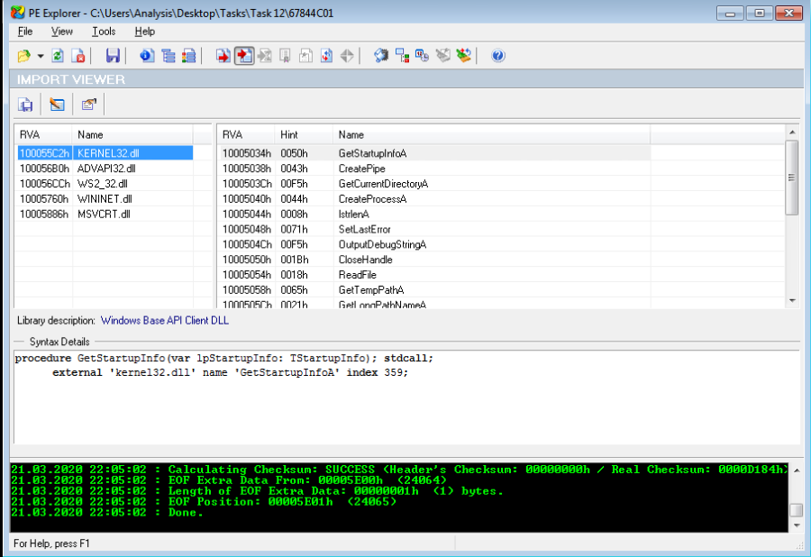

Introduction
Malware Analysis
Malware is such a prevalent topic within Cybersecurity, and often an unfortunately recurring theme among global news today.
Not only is malware analysis a form of incidence response, but it is also useful in understanding how the behaviours of variants of malware result in their respective categorisation. This room will be a practical introduction to the techniques and tools used throughout malware analysis - albeit brief, I hope to expand on these techniques a lot more in-depth within the future.
When analysing malware, it is important to consider the following: ▪ Point of Entry (PoE) I.e. Was it through spam that our e-mail filtering missed and the user opened the attachment? Let's review our spam filters and train our users better for future prevention!
▪ What are the indicators that malware has even been executed on a machine? Are there any files, processes, or perhaps any attempt of "un-ordinary" communication?
▪ How does the malware perform? Does it attempt to infect other devices? Does it encrypt files or install anything like a backdoor / Remote Access Tool (RAT)?
▪ Most importantly - can we ultimately prevent and/or detect further infection?!
Classsification:
Despite the many variants of malware, attacks can generally be classified into two types:
Targeted and
Mass Campaign.TargetedA
"Targeted" attack is just that - targeted. In most cases, malware attacks that occur this way are created for a specific purpose against a specific target. A great example of this type of purpose could be the DarkHotel malware, whom is designed to steal information such as authentication details from government officials.
Mass CampaignOn the other hand, the "Mass Campaign" classification can be akin to many real life examples, and is the most common type of attacks. The entire purpose of this type of Malware is to infect as many devices as possible and perform whatever it may - regardless of target.
Companies such as Kaspersky to name one, track these campaigns (known as Advanced Persistent Threats (APTs) and often report on their infection rate and indicators, much akin to the real-life spread of a virus from the World Health Organisation (WHO).
Identifying a malware attack:
The ultimate process of a malware attack can be broken down into a few broad steps:
1.Delivery
2.Execution
3.Maintaining persistence (not always the case!)
4.Propagation (not always!)
These steps will generate lots of data. Namely: network traffic such as communicating with hosts, file system interaction like read/writes and modification.
Malware is essentially classified based upon the behaviours it produces to perform the steps listed above. For a famous example,
Wannacry performs all four of these steps.
1. DeliveryThis could be of many methods, to name a few: USB (
Stuxnet!), PDF attachments through "Phising" campaigns or vulnerability enumeration.
2. ExecutionHere's the main part of how we classify Malware. What does it actually do? If it encrypts files - it's Ransomware! If it records information like keystrokes or displays adware - we can classify it as Spyware.
We only understand this stage through analysing the sample, which is why analysis is important - and is what we'll be covering.
3. Maintaining PersistenceIt wouldn't make much sense for Malware authors to go through all the trouble of developing a piece of code that is capable of execution - just for it to execute and that's it...Gone. Unless you have a very specific agenda (
Cerber).
This stage is largely why Malware is so "noisy", Malware employs many techniques, of which we'll be covering in-depth much later on. Essentially, this stage is just to make sure that the "execution" is worth its while.
4. PropagationHey...If you can infect one device, why not infect more whilst you're at it? Again, this is another reason why Malware can be so noticeable. Host discovery generates a lot of network traffic, we'll come to this later.
In Summary, there are
two categories of fingerprints that malware may leave behind on a Host after an attack:
Host-Based SignaturesThese are generally speaking the results of execution and any persistence performed by the Malware. For example, has a file been encrypted? Has any additional software been installed? These are two of many, many host-based signatures that are useful to know to prevent and check against further infection.
Network-Based SignaturesAt an overview, this classification of signatures are the observation of any networking communication taking place during delivery, execution and propagation. For example, in Ransomware, where has the Malware contacted for Bitcoin payments?
Such as in the case of Wannacry, looking for a large amount of "Samba" Protocol communication attempts is a great indication of infection due to its use of "
Eternalblue".
Analyzing Malware:
here are two categories used when analysing malware, these are:
1. Static Analysis
2. Dynamic Analysis
Whilst the methods and tools used for these two categories are vastly different, they are essential in compositing an understanding of how a malware behaves.
Static Analysis:At its brief, "Static Analysis" is used to gain a high-level abstraction of the sample - it can be fairly simple to decide if a piece of code is "malicious" or not with this method alone (but not always, this will be discussed later...). At its core, this method is of the analysis of the sample at the state it presents itself as, without executing the code.
Employing the use of techniques such as signature analysis via checksums means quick, efficient (albeit extremely brief) and safe analysis of malware.
Dynamic Analysis:This step is a lot more involved, and is where the abstraction of the sample is largely built upon. "Dynamic Analysis" essentially involves executing the sample and observing what happens. This of course is not safe. If the sample turns out to be "Ransomware" - you've now lost your files. If it is capable of propagating via traversing a network, nice...You've now just infected your Local Area Network (LAN).
Note: Some Static Analysis Tools:
C:\Users\Analysis\Desktop\Tools\Static\PE Tools
Dependency Walker (depends)
PeID
PE Explorer
PEview
ResourceHacker
C:\Users\Analysis\Desktop\Tools\Static\Disassembly
IDA Freeware
WinDbg
C:\Users\Analysis\Desktop\Tools\Sysinternalsuite
ResourceHacker
Obtaining MD5 Checksums of Provided Files
MD5 "Checksums" are a prominent attribute in the malware Community. Because there can be many variants of a family of Ransomware, these MD5 "Checksums" are cryptographic "fingerprints" of the files. This allows a uniformed identification throughout the community - especially with automated Sandboxes.
For example, say you have 20 files of unknown origin, you are able to identify their genus using their MD5 sum against websites such as Virustotal, if that MD5 "Checksum" has been previously analyzed - removing all the legwork for us!
Navigate to the "Tasks" Folder on the Desktop, and then enter the "Task 7" Directory, where there will be three files:
- aws.exe
- NetLog.exe
- vlc.exe
Sure, these are common names of executables, but anyone can name an executable as whatever they like! Just because it says "vlc" doesn't mean it is indeed the VLC application! This is where identifying their MD5 Checksum is useful, as no matter the name - their MD5 reveals its true identity.
I have installed the
"HashTab" application, which calculates a files MD5 sum - amongst others, directly within Windows Explorer as if you were inspecting its properties..

Identifying how the Executables are obfuscated / packed
There are a few provided tools on this Windows instance that are capable of identifying the compiler / packer of a file. However, PeID has a huge database and is a great tool for this.
Moreover, just because a file doesn't have the "
.exe" extension, doesn't mean it isn't an actual executable! For instance, it can have the ".jpg" extension and still be an executable piece of code. This is a tad-bit out of scope for this room specifically, but essentially, files have identifying attributes within its hex - known as file headers.
E.g. The hex value for an executable is always "
4D 5A". So if a file with a "
.jpg" file has the hex header of "
4D 5A", then it is obviously not a jpg file. You can read more into file headers / trailers
here, which are great resources for data carving in file forensics / recovery.
Provided Tools: PeIDNow using
"PeID", identify the compiler / packer of the following two files in the Directory "Tasks/Task 9" to answer the questions.

An example of using PEiD to identify the packer of a file. In this case, it is reported as "Microsoft Visual C++ 6.0"
What is Obfuscation / Packing?
Theory:Packing is one form of obfuscation that malware Authors employ to prevent the analysis of programmes. There are both legitimate and malicious reasons as to why the Author of a program will want to prevent the decompiling of their program.
For example, a legitimate reason is the protection of intellectual property! Whilst I'm one for open-source as much as the next person here - alas not every organisation has the same mindset...but let's leave that aside.
In the same token, just because you write a program...Why should everyone have the right to "copy" your project? This is one of the justifiable reasons for obfuscation - it is yours at the end of the day!
However, malware Authors employ obfuscation techniques such as packing - whilst for the same reasons, they do so with the intent to prevent people like us reversing it to understand its behaviours and ultimately with the aims of achieving infection.
How packing works is out of scope for this room, but I hope to be able to delve into topics like these later on within THM, so that you can understand the theory behind the practical skills you'll be using.
Practical:Your task is to identify whether or not the file "6F431F46547DB2628" located in the Directory of "Tasks\Task 10" is packed using the tool "PeID" akin to the task you just completed!
Introduction to Strings
Theory:"
Strings" are essentially the ASCII / Text contents of a program...this could be anything from passwords for self-extracting zips, to bitcoin addresses in ransomware samples.
Such as that in the example above, when analysing the contents of these strings, we can sometimes paint a fairly indicative picture of the behaviours of the programme - bitcoin wallets being used in ransomware.
Task:Open a Command prompt on the Windows Machine and navigate to the directory 
"Tools\Sysinternalssuite"cd C:\Users\Analysis\Desktop\Tools\SysinternalsSuiteKeep this terminal open.We're going to use Microsoft's Sysinternals "Strings" program to output the retained strings within the specified file in "Task 12". We can do this by:
strings "C:\Users\Analysis\Desktop\Tasks\Task 12\67844C01"You will receive a whole load of text, most of it looks like nonsense...But there is some text in there that is valuable. Scroll up!

You'll find that programs often contain large amount of strings and using the "strings" tool from sysinternals may only display 10% of these...
...That and it's not exactly practical scrolling up through a terminal for stuff like this - we are on Windows afterall! There's a GUI tool for that.
Launch the application within "
Tools/Static/PE Tools/PE Explorer" and drag and drop the same file "
67844C01" from the previous question into the application.

We can import the executible. Then, Navigate to
"View -> Imports"
Introduction to Imports
Theory:The classification of IDA Freeware is arguable as the tool can be used for both static and dynamic analysis. Without going too in-depth regarding the differences, there are two classifications of tools like IDA Freeware:
▪ Disassemblers
▪ Debuggers
I'll allow you to explore the differences between these two types of tools and their use cases in your own time, but for contextual sake - Disassemblers reverse the compiled code of a program from machine code to human-readable instructions (assembly). This is limited to how the program represents itself in its current state! I.e. If the contents of an executable changes during execution - "Disassemblers" will not reflect this.
Whilst Debuggers deploy the same techniques used by "Disassemblers", "Debuggers" essentially facilitate execution of the program - where the analyser can view the changes made throughout each "step" of the program. These tools are great because a true picture of the program presents itself. However, if it is indeed malicious, you have now infected yourself.
With enough understanding, an analyser can introduce "breakpoints" (or pauses) at various stages of a program, where the program will execute up until a breakpoint. For example, sticking with the idea of Ransomware, an analyser can create a "breakpoint" within the application prior to the actual stage of encryption of files. This facilitates an analyser to view the various changes of a program during execution (such as unpacking or connecting to a remote server such as that in a botnet) up until the point of malicious infection.
Tool Used: Immunity Debugger